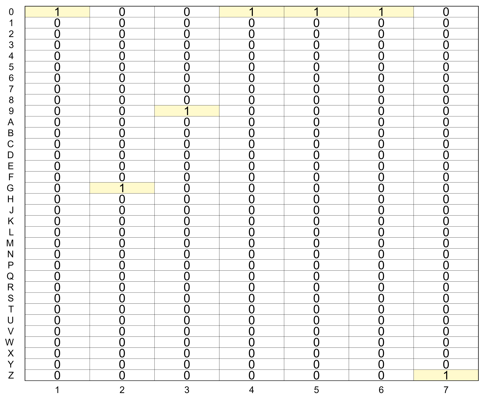
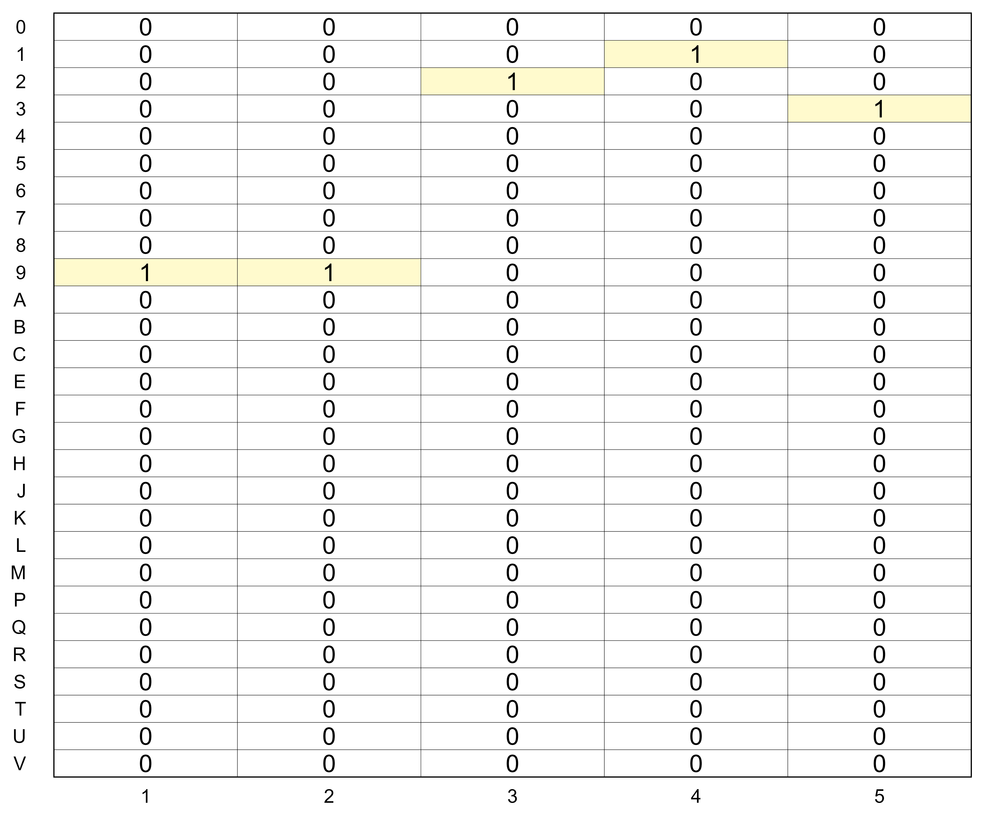

$c
[1] "0" "1" "2" "3" "4" "5" "6" "7" "8" "9" "A" "B" "C" "D" "E" "F" "G" "H" "J"
[20] "K" "L" "M" "N" "P" "Q" "R" "S" "T" "U" "V" "W" "X" "Y" "Z"
$p
[1] 1 2 3 4 5 6 7 8 9 10 11 12 13 14 15 16 17 18 19 20 21 22 23 24 25
[26] 26 27 28 29 30 31 32 33 34
$a
[1] 1 2 3 4 5 6 71 Coding Terminologies
hcpcs <- lst(
c = c(0:9, grep("[^DINOW-Z]", LETTERS, value = TRUE)),
p = seq2_along(1, c),
a = 1:5)
hcpcs$c
[1] "0" "1" "2" "3" "4" "5" "6" "7" "8" "9" "A" "B" "C" "E" "F" "G" "H" "J" "K"
[20] "L" "M" "P" "Q" "R" "S" "T" "U" "V"
$p
[1] 1 2 3 4 5 6 7 8 9 10 11 12 13 14 15 16 17 18 19 20 21 22 23 24 25
[26] 26 27 28
$a
[1] 1 2 3 4 51.1 Lookup
1.2 Make Matrix
ICD-10-PCS:
1 2 3 4 5 6 7
0 1 0 0 1 1 1 0
1 0 0 0 0 0 0 0
2 0 0 0 0 0 0 0
3 0 0 0 0 0 0 0
4 0 0 0 0 0 0 0
5 0 0 0 0 0 0 0
6 0 0 0 0 0 0 0
7 0 0 0 0 0 0 0
8 0 0 0 0 0 0 0
9 0 0 1 0 0 0 0
A 0 0 0 0 0 0 0
B 0 0 0 0 0 0 0
C 0 0 0 0 0 0 0
D 0 0 0 0 0 0 0
E 0 0 0 0 0 0 0
F 0 0 0 0 0 0 0
G 0 1 0 0 0 0 0
H 0 0 0 0 0 0 0
J 0 0 0 0 0 0 0
K 0 0 0 0 0 0 0
L 0 0 0 0 0 0 0
M 0 0 0 0 0 0 0
N 0 0 0 0 0 0 0
P 0 0 0 0 0 0 0
Q 0 0 0 0 0 0 0
R 0 0 0 0 0 0 0
S 0 0 0 0 0 0 0
T 0 0 0 0 0 0 0
U 0 0 0 0 0 0 0
V 0 0 0 0 0 0 0
W 0 0 0 0 0 0 0
X 0 0 0 0 0 0 0
Y 0 0 0 0 0 0 0
Z 0 0 0 0 0 0 1HCPCS (CPT):
1 2 3 4 5
0 0 0 0 0 0
1 0 0 0 1 0
2 0 0 1 0 0
3 0 0 0 0 1
4 0 0 0 0 0
5 0 0 0 0 0
6 0 0 0 0 0
7 0 0 0 0 0
8 0 0 0 0 0
9 1 1 0 0 0
A 0 0 0 0 0
B 0 0 0 0 0
C 0 0 0 0 0
E 0 0 0 0 0
F 0 0 0 0 0
G 0 0 0 0 0
H 0 0 0 0 0
J 0 0 0 0 0
K 0 0 0 0 0
L 0 0 0 0 0
M 0 0 0 0 0
P 0 0 0 0 0
Q 0 0 0 0 0
R 0 0 0 0 0
S 0 0 0 0 0
T 0 0 0 0 0
U 0 0 0 0 0
V 0 0 0 0 02 Plot Matrix
mpcs <- medtrix(code = "0G9000Z", system = pcs)
gpaint_matrix(
mpcs,
highlight_area = mpcs == 1,
show_indices = "none",
graph_title = "ICD-10-PCS Code 0G9000Z"
) +
theme_solid() +
ylim(rev(rownames(mpcs))) +
xlim(colnames(mpcs)) +
xlab("") +
ylab("") +
theme(
legend.position = "none",
axis.text.x = element_text(size = 11),
axis.text.y = element_text(size = 11),
axis.ticks.x = element_blank(),
axis.ticks.y = element_blank())
mhcpcs <- medtrix(code = "99213", system = hcpcs)
gpaint_matrix(
mhcpcs,
highlight_area = mhcpcs == 1,
show_indices = "none",
graph_title = "HCPCS Code 99213") +
theme_solid() +
ylim(rev(rownames(mhcpcs))) +
xlim(colnames(mhcpcs)) +
xlab("") +
ylab("") +
theme(
legend.position = "none",
axis.text.x = element_text(size = 11),
axis.text.y = element_text(size = 11),
axis.ticks.x = element_blank(),
axis.ticks.y = element_blank())
2.1 Session Information
R version 4.4.2 (2024-10-31 ucrt)
Platform: x86_64-w64-mingw32/x64
locale: LC_COLLATE=English_United States.utf8, LC_CTYPE=English_United States.utf8, LC_MONETARY=English_United States.utf8, LC_NUMERIC=C and LC_TIME=English_United States.utf8
attached base packages: stats, graphics, grDevices, utils, datasets, methods and base
other attached packages: fuimus(v.0.0.2), paintr(v.0.0.1), ggthemes(v.5.1.0), stringfish(v.0.16.0), rlang(v.1.1.4), lubridate(v.1.9.3), forcats(v.1.0.0), stringr(v.1.5.1), dplyr(v.1.1.4), purrr(v.1.0.2), readr(v.2.1.5), tidyr(v.1.3.1), tibble(v.3.2.1), ggplot2(v.3.5.1) and tidyverse(v.2.0.0)
loaded via a namespace (and not attached): utf8(v.1.2.4), generics(v.0.1.3), stringi(v.1.8.4), hms(v.1.1.3), digest(v.0.6.37), magrittr(v.2.0.3), evaluate(v.1.0.1), grid(v.4.4.2), timechange(v.0.3.0), fastmap(v.1.2.0), jsonlite(v.1.8.9), pander(v.0.6.5), fansi(v.1.0.6), scales(v.1.3.0), textshaping(v.0.4.0), cli(v.3.6.3), munsell(v.0.5.1), withr(v.3.0.2), yaml(v.2.3.10), tools(v.4.4.2), tzdb(v.0.4.0), colorspace(v.2.1-1), vctrs(v.0.6.5), R6(v.2.5.1), lifecycle(v.1.0.4), htmlwidgets(v.1.6.4), ragg(v.1.3.3), pkgconfig(v.2.0.3), RcppParallel(v.5.1.9), pillar(v.1.9.0), gtable(v.0.3.6), glue(v.1.8.0), Rcpp(v.1.0.13-1), systemfonts(v.1.1.0), xfun(v.0.49), tidyselect(v.1.2.1), rstudioapi(v.0.17.1), knitr(v.1.49), farver(v.2.1.2), htmltools(v.0.5.8.1), rmarkdown(v.2.29) and compiler(v.4.4.2)
Reuse
Citation
BibTeX citation:
@online{allen_bruce2024,
author = {Allen Bruce, Andrew},
title = {Medical {Codes} as {Matrices}},
date = {2024-11-15},
url = {https://andrewallenbruce.github.io/acephale/posts/draw_matrix/draw_matrix.html},
langid = {en}
}
For attribution, please cite this work as:
Allen Bruce, Andrew. 2024. “Medical Codes as Matrices.”
November 15, 2024. https://andrewallenbruce.github.io/acephale/posts/draw_matrix/draw_matrix.html.